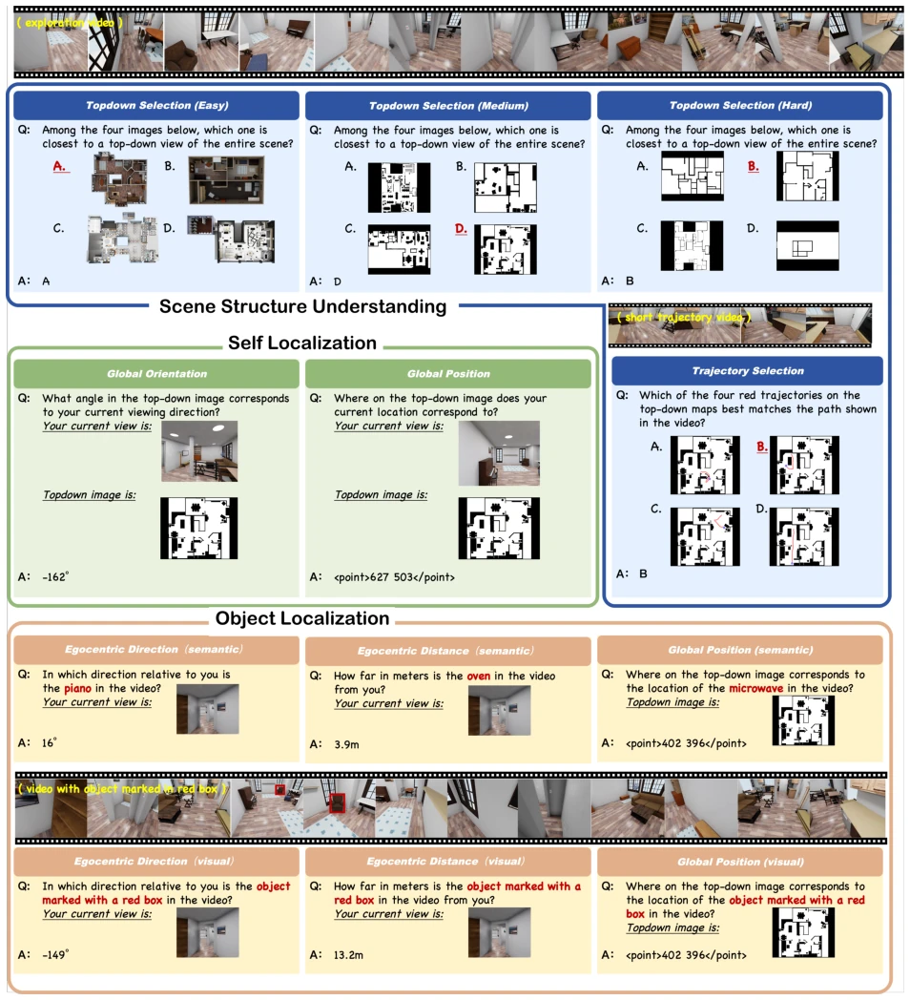
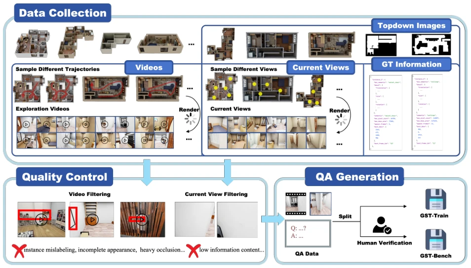

Figure 1 Overview of GST-Bench. We evaluate global spatial awareness along three core competencies — self localization (Where am I?), object localization (Where is the target?), and scene structure understanding (What does the scene look like?). Given an egocentric exploration video and a novel query view, models must localize themselves, reason about targets unseen in the current view and map observations onto a global top-down representation. As shown on the right, even the strongest VLM (Gemini-3-Pro, 42.68) falls far below the human baseline (79.08).
方法Method
GST-Bench 构建了一套自动化的数据生成流水线。首先基于 OmniGibson 仿真环境，利用 BEHAVIOR-1K [11] 等资产生成 50 个多样室内场景。核心流程包括：1. 探索视频生成：采样空间分布视点连接成轨迹，渲染长时程第一人称视频；2. 目标标注视频：对可见目标实例叠加红框，支持视觉模态定位；3. 顶视图生成：提供三种抽象层级（照片级、占用图、平面图）作为全局表征；4. 当前视图生成：从独立于探索轨迹的新视点采样，且强制目标不可见，确保无法单帧求解。任务分为三大核心能力：自我定位（Where am I?）、物体定位（Where is the target?）和场景结构理解（What does the scene look like?），细分为 12 个子任务。评测指标针对距离、角度、点位和选择题分别设计（如 MRA、角度误差）。此外，还构建了 GST-Train 训练集，通过相同流水线生成，用于验证针对性数据对缩小差距的有效性。
—

Figure 2 Representative GST-Bench samples from each of the twelve task types, organized by the three core competencies: self localization, object localization, and scene structure understanding.

Figure 3 Overview of the automatic data generation pipeline. Starting from diverse simulation scenes, the pipeline produces exploration videos, object-annotated videos, novel-viewpoint images, top-down images at three abstraction levels, and template-based QA pairs, followed by automated filtering and human verification.
Figure 4 Illustration of the three controlled settings used to disentangle global reasoning from local perception. Global (target absent from the current view, requires cross-frame integration), Local-Video (current view contains the target, exploration video redundant), and Local-Image (exploration video removed, reduced to single-image spatial understanding).